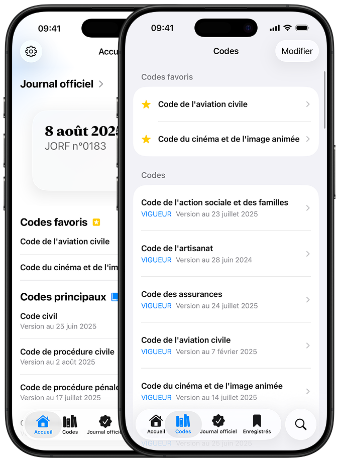
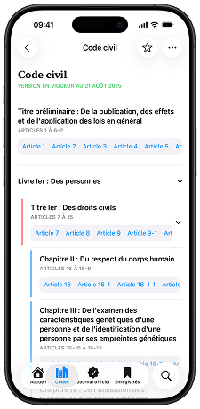
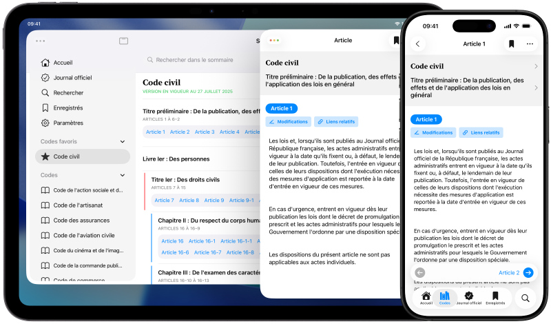
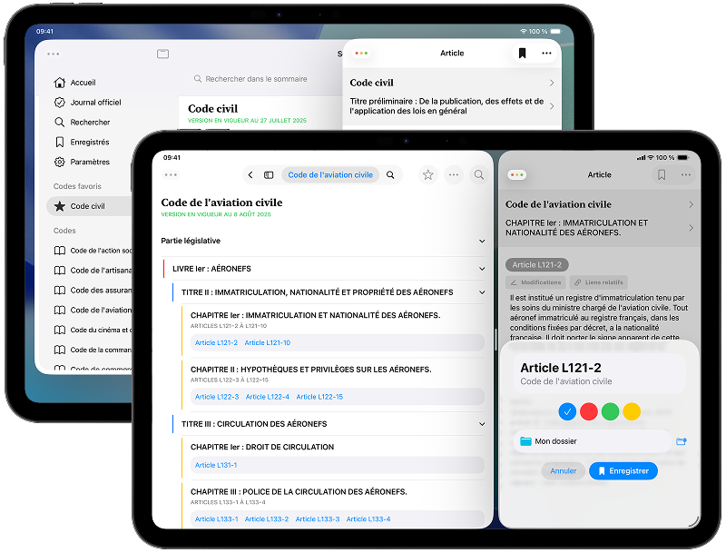
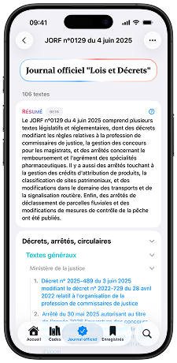

Tout le droit français
mis à jour en temps réel
Un application indépendante, bien pensée et facile d'utilisation.
Conçue pour les étudiants et les professionnels, Hélia allie fiabilité et confort d'utilisation au quotidien.

Téléchargement gratuit pour iOS, iPadOS et macOS
L'intégralité des codes sont disponibles et mis à jour en temps réel.
Sélectionnez vos favoris pour y accéder rapidement.

Vos codes favoris, vos dossiers* et vos textes enregistrés sont automatiquement synchronisés sur tous vos appareils.

Ouvrez plusieurs fenêtres* et arrangez les comme bon vous semble.

Consultez chaque jour le sommaire du Journal Officiel de la République Française et naviguez dans les textes publiés.
Enregistrez des textes pour les retrouver facilement dans le futur.

Des fonctionnalités pratiques.
Téléchargement gratuit pour iOS, iPadOS et macOS